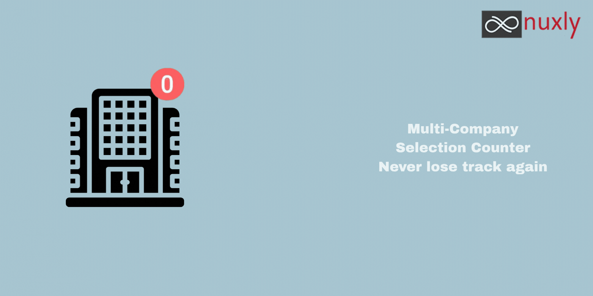
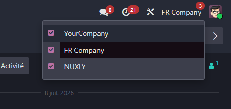

Know at a glance how many companies you have selected
Adds a small badge directly on the company switcher button, showing how many companies are currently selected — so multi-company users stop getting confused about which companies' data they are actually looking at.
web_multi_company_counterIn multi-company setups, it is easy to lose track of how many companies are currently selected. Clicking on a record tied to a specific company can silently switch the active company, and conversely, users sometimes think they are scoped to a single company while another one is still selected — leading to confusion about which records they are actually seeing.
This module adds a simple visual reminder, right where users already look (the company switcher itself), so the current multi-company state is never a surprise.

This module is maintained by Nuxly. Visit nuxly.com